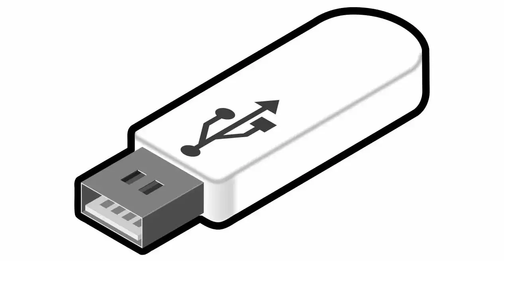
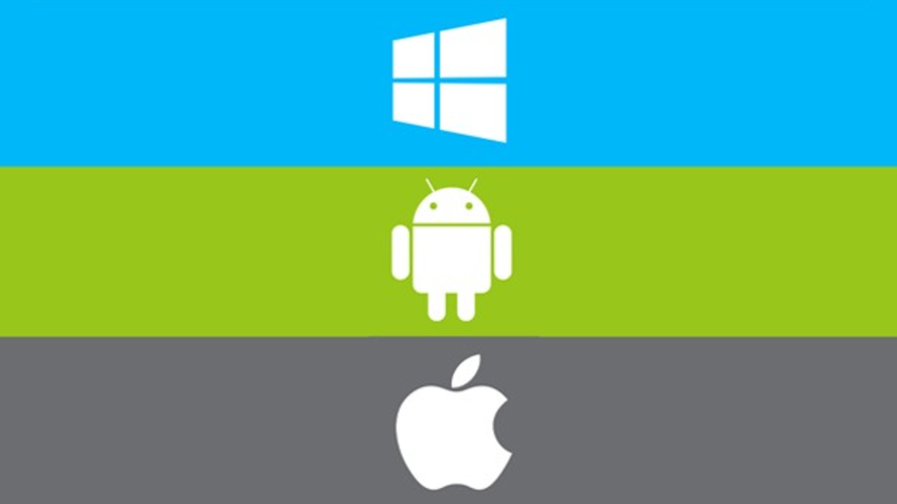
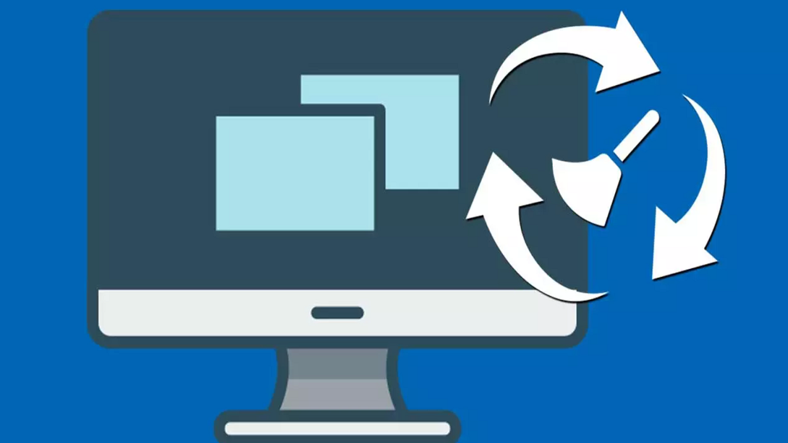

Sistemas Operativos:Formateo
Pendrive Booteable

¿Que es un Pendrive Booteable?
Un USB booteable es una memoria en formato USB que sirve para llevar a cabo el proceso de 'boot' o lo que es lo mismo, arrancar el ordenador desde el USB.
Sistemas Operativos

¿Que es un SO y cuales son los más usados?
Un USB booteable es una memoria en formato USB que sirve para llevar a cabo el proceso de 'boot' o lo que es lo mismo, arrancar el ordenador desde el USB.
Formateo

¿Que es el formateo de PC?
Un USB booteable es una memoria en formato USB que sirve para llevar a cabo el proceso de 'boot' o lo que es lo mismo, arrancar el ordenador desde el USB.